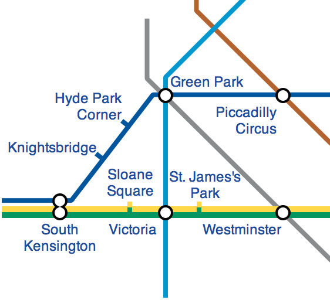

var topsight = Topsight.View("map_div");
// define some artifacts
topsight.define("station", function(model) {
topsight.construct({
"wheel": {
position: Topsight.center(),
dimensions: [20, 20],
},
"label": {
position: Topsight.above("wheel"),
dimensions: [50, 20]
text: model.name
},
"paper": {
position: Topsight.below("wheel"),
dimensions: [50, 20]
placeholder: "Enter description",
}
});
});
topsight.define("metro_line", function(model) {
var prev_station = null;
for (var i in model.stations) {
var station_id = model.stations[i];
var station = topsight.select("station#" + station_id);
topsight.construct(station);
if (prev_station) {
topsight.construct({
"pipe": {
from_position: prev_station.position,
to_position: station.position,
color: model.color,
}
});
prev_station = station;
}
});
});
// now draw the map
topsight.construct({
station: [
"kensington": {
name: "South Kensington",
position: [10, 70]
},
"green_park": {
name: "Green Park",
position: [50, 10]
},
"victoria": {
name: "Victoria",
position: [50, 70]
},
"piccadilly": {
name: "Piccadilly Circus",
position: [70, 10]
},
"westminister": {
name: "Westminister",
position: [70, 70]
},
],
metro_line: [
"blue_line": {
color: "blue",
stations: ["kensington", "green_park", "piccadilly"]
},
"green_line": {
color: "green",
stations: ["kensington", "victoria", "westminister"]
},
"yellow_line": {
color: "yellow",
stations: ["kensington", "victoria", "westminister"]
},
"lightblue_line": {
color: "lightblue",
stations: ["victoria", "green_park"]
},
"grey_line": {
color: "grey",
stations: ["green_park", "westminister"]
},
]
});
